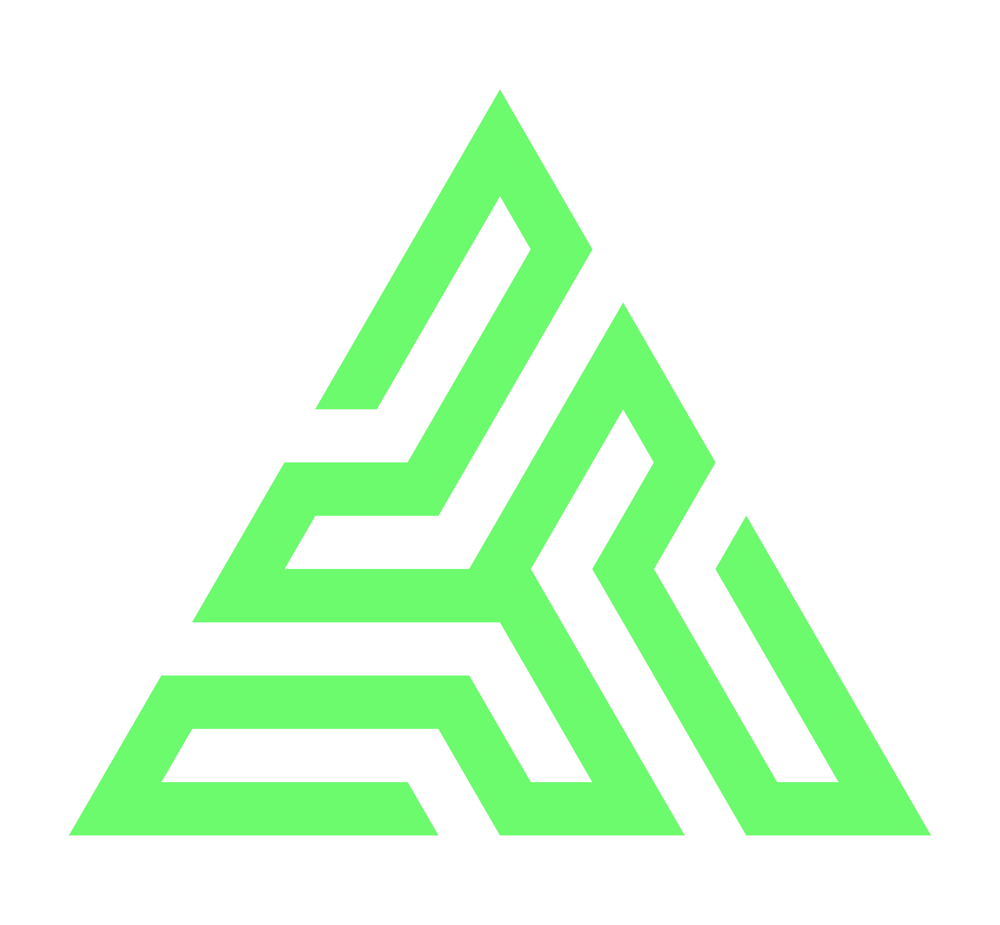

A presentation title, set in two lines.
A short subtitle or byline that frames the work — who it's for and why it exists.
overview
What we'll cover.
01
Chapter
First chapter title.
A single sentence that sets up the chapter — what we're about to argue, show, or explain.
subtopic
A claim, framed as one sentence.
- First point. A short follow-on clause that explains or qualifies the point.
- Second point. Keep each bullet to one or two short sentences — the typography rewards restraint.
- Third point. Numbered counters render automatically; do not write the numbers in the markup.
- Fourth point. Aim for four to six bullets per slide. Five is the sweet spot.
02
Chapter
Second chapter title.
A single sentence that sets up the chapter.
how it works
A flow, drawn in SVG.
takeaway
The whole thing, in one line.
- Restate the thesis. Make it concrete and unambiguous.
- Name the next step. What the audience should do, ask, or decide after this slide.
- Leave one provocation. A question or open thread that earns the next conversation.

Thank you.
Questions, follow-ups, and the rest of the conversation.
your-deck.example.com